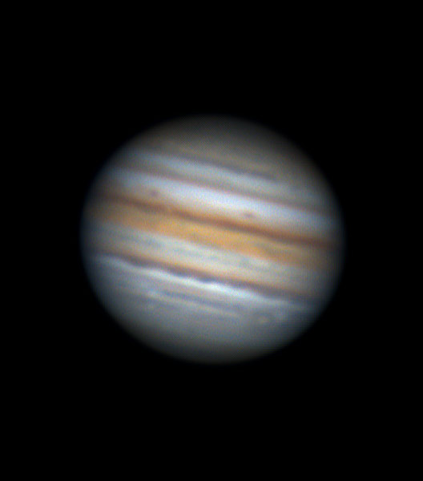
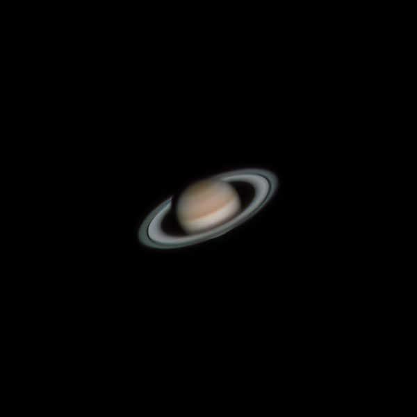
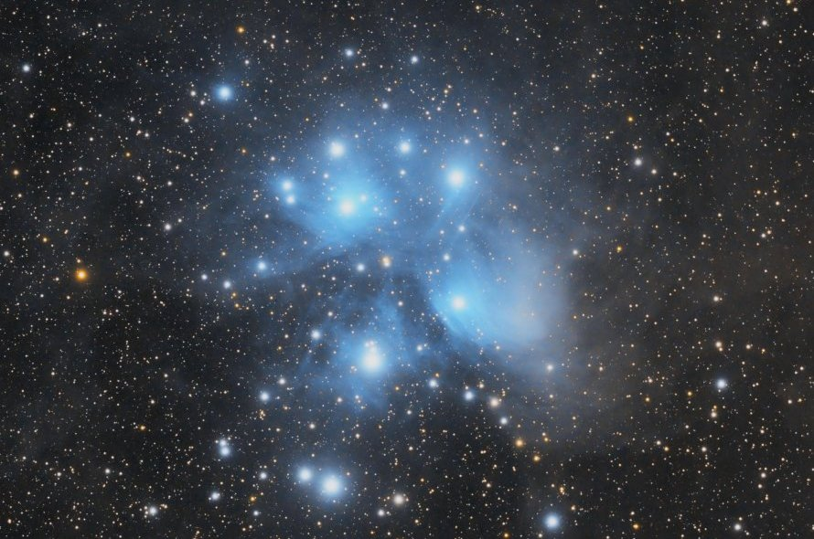

Welcome to Stargaze with Aafthab
I have been fascinated by astronomy ever since I was a child. I love looking up at the stars and wondering about the vastness of the universe. I have recently started taking my hobby more seriously, and I enjoy observing the night sky with my telescope.
On this website, I will share my experiences and observations with you. I will also provide information about astronomy resources and events.
My Recent Observations
| Date | Object | Description | |
|---|---|---|---|
| 2023-11-02 | Jupiter | I observed Jupiter and its four largest moons: Ganymede, Callisto, Io, and Europa. Jupiter was a bright object in the night sky. Its moons were also visible with my telescope. |  |
| 2023-08-27 | Saturn | I observed Saturn and its rings. Saturn is a beautiful object in the night sky. Its rings are very intricate and detailed. |  |
| 2023-10-24 | Orion Nebula | I observed the Orion Nebula. It is a large cloud of gas and dust where stars are forming. The nebula is visible to the naked eye, but it is more impressive when viewed through a telescope. |  |
| 2023-09-19 | Pleiades Star Cluster | I observed the Pleiades star cluster. It is a group of young stars that are located in the constellation Taurus. The Pleiades are visible to the naked eye, and they are a popular target for amateur astronomers. |  |
Softwares That I Use
- Lightroom
- Photoshop
- Siril
- Deep Sky Stacker
- PIPP
- Autostakkert
- FireCapture
- RegiStax